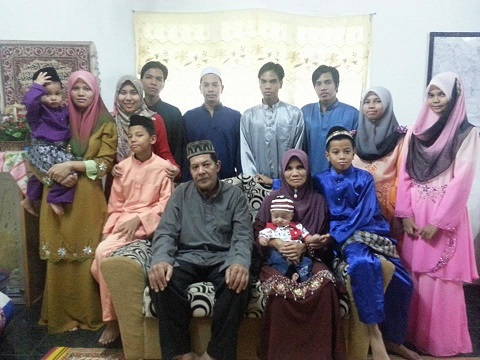

MY FAMILY

I have 10 siblings. Six men and four women. I am the youngest girl in the family. I have four brothers, three sisters and identical twin brothers. My father is from Taiping, Perak while my mother is from Alor Setar, Kedah. I have four nephews and one niece. I love my family very much. My father is 67 years old, he was a government retiree. My mother is 56 years old, she is a housewife. My eldest brother is 37 years old followed by the second aged 36, the third is 33, the fourth is 31, the fifth is 29, the sixth is 26, the seventh is 24, the eight who is me is 21 years old, and my twin brothers is 19 years old this year. All my nephews are still small and young. The three of them are already in primary school and another two are still babies.
Video of My Family